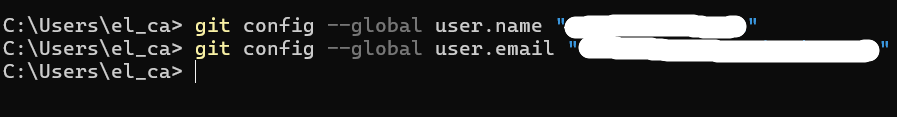
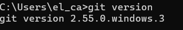
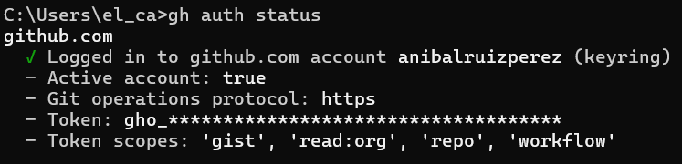
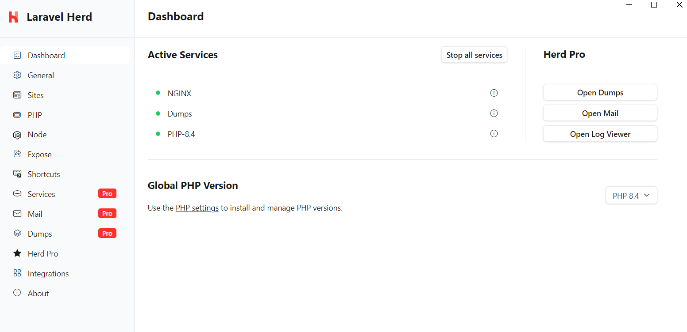
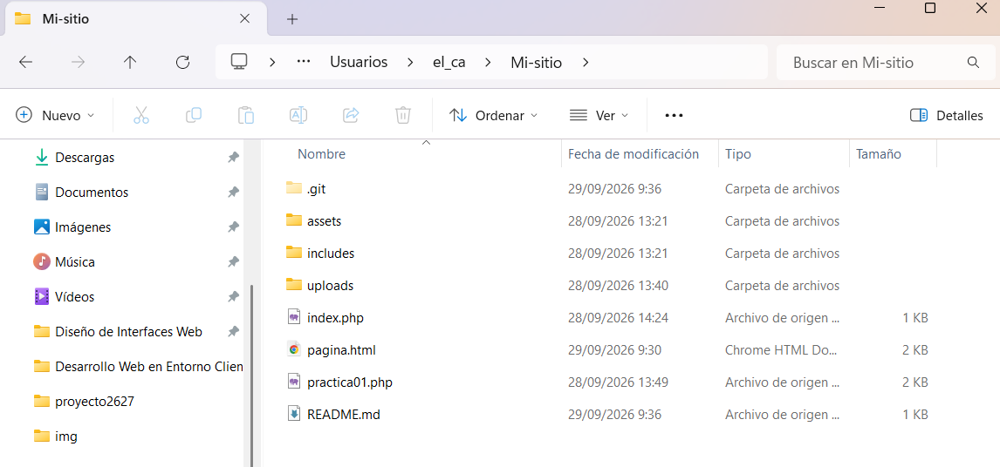
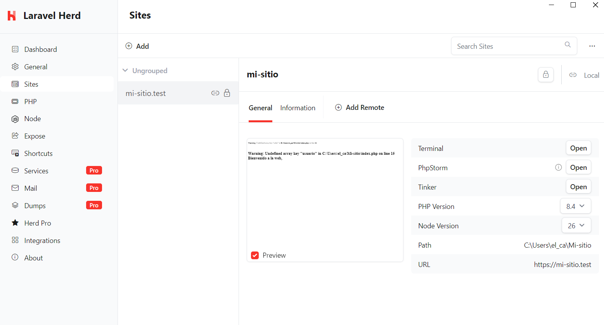
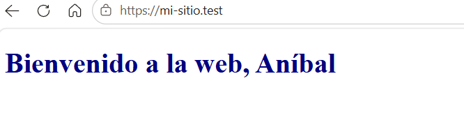

PRÁCTICA 01: DOCUMENTACIÓN DEL PROYECTO MI_SITIO CON HERD
1. Validación de la instalación del entorno de desarrollo
Git instalado y configurado en local


GitHub CLI instalado y configurado

Herd instalado con la versión de PHP 8.4

Repositorio "Mi_sitio" clonado en local

Herd enlazado al repositorio "Mi_sitio" y sirviéndolo en HTTPS


2. Elementos, plugins y extensiones usadas
Temas
- Tema ReadtheDocs
Extensiones de Markdown
- tables
- codehilite
- pymdownx.superfences
- pymdownx.betterem
- pymdownx.caret
- pymdownx.details
- pymdownx.emoji
- pymdownx.mark
- pymdownx.superfences
- pymdownx.tasklist
- pymdownx.tilde
- pymdownx.arithmatex
- pymdownx.blocks.admonition
- pymdownx.magiclink
- pymdownx.keys
- pymdownx.highlight
- pymdownx.blocks.definition